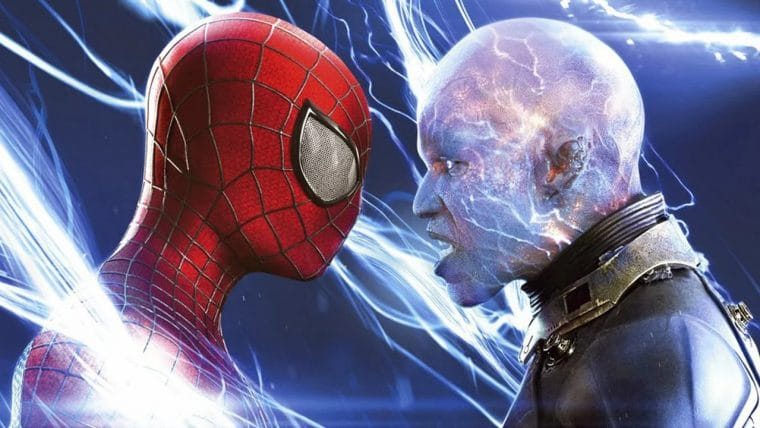
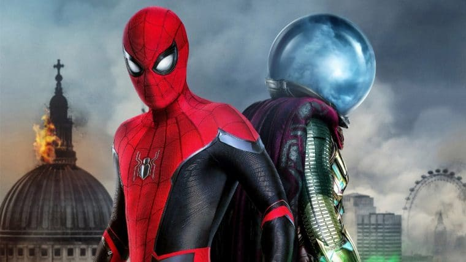
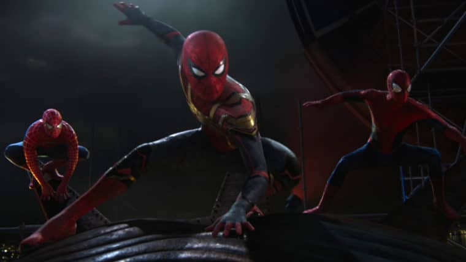
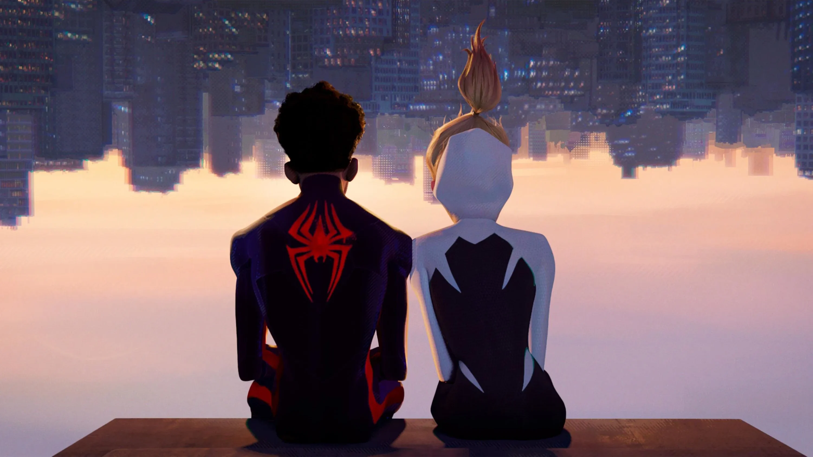

1 - Homem-Aranha (2002)
Resumo: O filme que iniciou a franquia, mostrando Peter Parker ganhando seus poderes e enfrentando o Duende Verde.
Resumo: O filme que iniciou a franquia, mostrando Peter Parker ganhando seus poderes e enfrentando o Duende Verde.

Resumo: Peter equilibra sua vida de herói com relacionamentos enquanto enfrenta o ameaçador Doutor Octopus.

Resumo: Parker encara o simbionte negro e precisa lidar com ciúmes, enquanto enfrenta o Homem-Areia e o Venom.

Resumo: Um reboot do herói com nova origem e o confronto contra o Lagarto.

Resumo: O herói enfrenta o Electro e o Duende Verde enquanto sua relação com Gwen Stacy se complica.

Resumo: Peter tenta ser um herói local sob a tutela do Homem de Ferro e enfrenta o Abutre.

Resumo: Após os eventos de Endgame, Peter viaja à Europa para enfrentar o Mysterio e proteger seus amigos.

Resumo: O multiverso se abre e ele precisa lidar com vilões de outras realidades e restaurar sua identidade.

Resumo: Miles Morales explora o multiverso animado com novos heróis aracnídeos e desafios dimensionais.

Resumo: Miles e sua equipe viajam ainda mais fundo no multiverso em um confronto decisivo para salvar várias realidades.